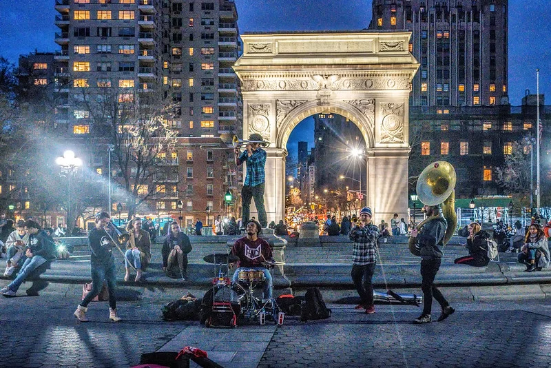
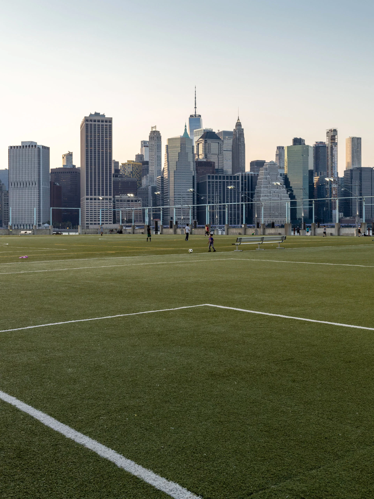
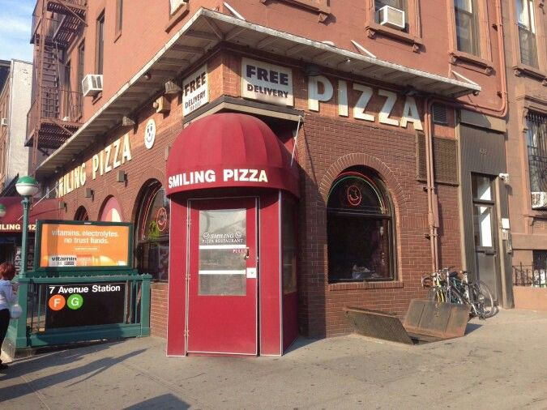

Here are the coolest places in the whole city:
| Place | Description | Image |
|---|---|---|
| Washington Square Park | This is a pretty cool place to just chill and interact with some people who you will never see. In the heart of whatever campus NYU claims. |  |
| Hoyt-Schemerhorn Station | Most popular G station, gets very very very very hot in the summers, where the Bad music video was filmed(Bad by Michael Jackson). | |
| The Piers | Some people have said that this is the best soccer field in all of NYC. It has a beatiful view, but does that make up for how often I have kicked my own soccer ball into the East River, I don't know. |  |
| Smiling Pizza | It's location by the 7th Ave G stop allows for easy access and is in some peoples mind the heart of Park Slope. Used to go here a lot, but I think you can really age out of the whole area. |  |
Find the link to some of my favorite things HERE
Find the link to a skill I can teach you HERE